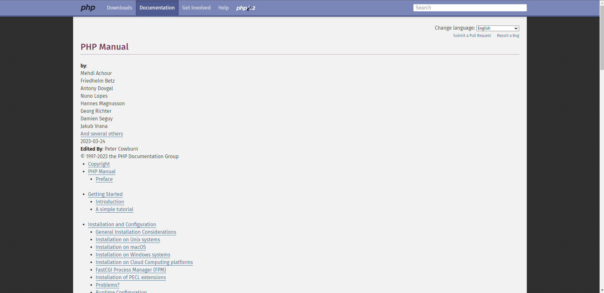

ANDROID

Le projet android est le deuxième projet en groupe de programmation que nous avons sur la seconde année.
Elle est la suite logique de notre application WEB.


Pour commencer l'utilisateur doit se connecter sur l'application grâce à ses identifiants et mot de passe.
Une fois connecté sur l'application l'utilisateur aura accès à sa page d'accueil où il retrouvera ses rendez-vous à venir.


Ce dernier a la possibilité de naviguer dans l'application grâce au navigation drawer mit en place.
Il pourra donc arriver sur la section "Compte-rendus" ou ce dernier pourra visualiser tout les comptes-rendus qu'il a saisit.
Grâce à des API l'application pourra communiquer avec la base de donnée et ainsi nous retourner des données (Par exemple les infos clients).
Compétences
Gérer le patrimoine informatique:

- TODO
- TODO
Travailler en mode projet :

- TODO
- TODO
- TODO
Répondre aux incidents et aux demandes d’assistance et d’évolution :

- TODO
Développer la présence en ligne de l’organisation :

- TODO
Mettre à disposition des utilisateurs un service informatique :

- TODO
- TODO
Organiser son développement professionnel :
- TODO